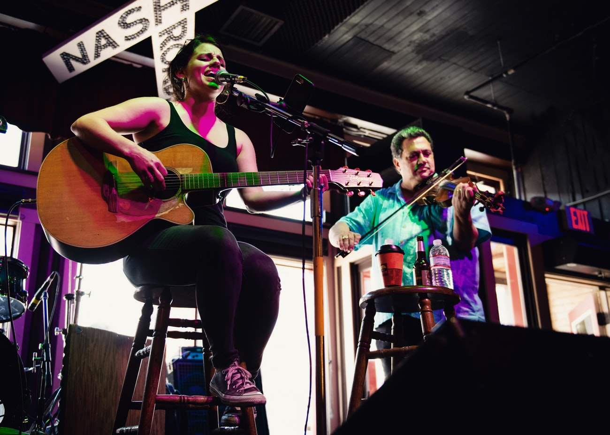

About The Musicians
"We are more comfortable with not fighting what comes naturally. Before we might have thought, ‘We need to be smarter than this."
- Xavier de Rosnay
Xavier de Rosnay & Gaspard Auge
Xavier De Ronsay and Gaspard Augé had a few mutual friends, who happened to run a record label, seeking tracks for a compilation. With an immediate connection, the pair decided to try their hand at making a song. That’s when they created their breakout single, We Are Your Friends – a feel-good, funk-filled, instant anthem that lost the remix contest, but won the attention of Pedro Winter, director of the newly founded Ed Banger Records, who boasted Daft Punk as former clients. One week later, they were in his office, signing a record deal.
Xavier De Ronsay and Gaspard Augé had a few mutual friends, who happened to run a record label, seeking tracks for a compilation. With an immediate connection, the pair decided to try their hand at making a song. That’s when they created their breakout single, We Are Your Friends – a feel-good, funk-filled, instant anthem that lost the remix contest, but won the attention of Pedro Winter, director of the newly founded Ed Banger Records, who boasted Daft Punk as former clients. One week later, they were in his office, signing a record deal.
Photo Gallery